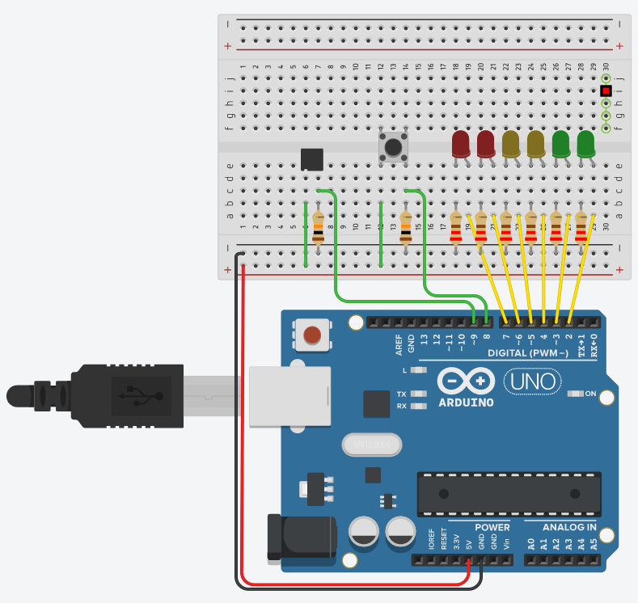
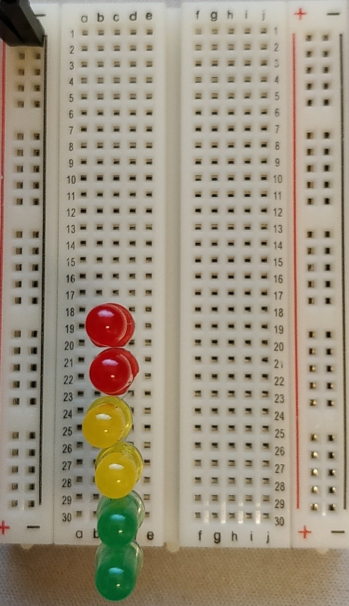
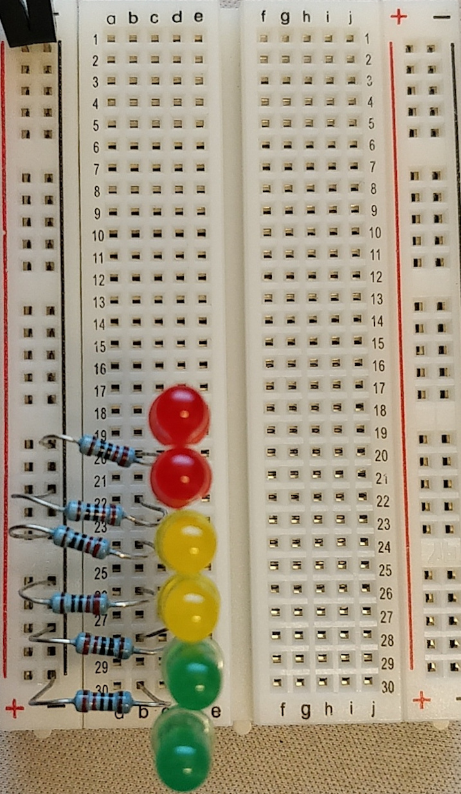
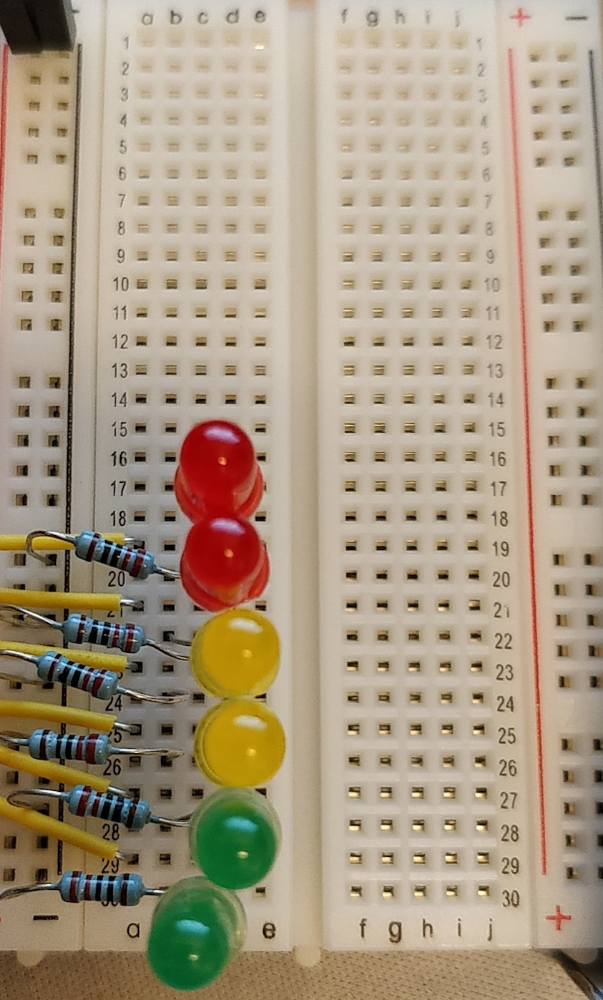
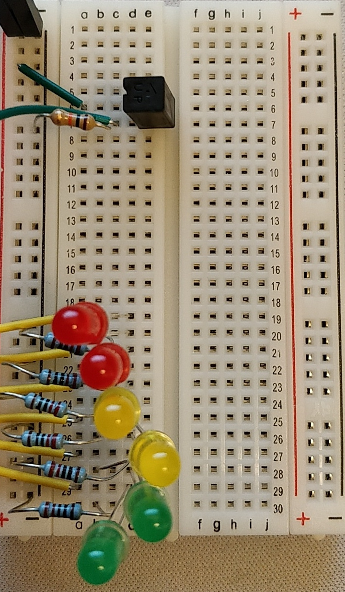
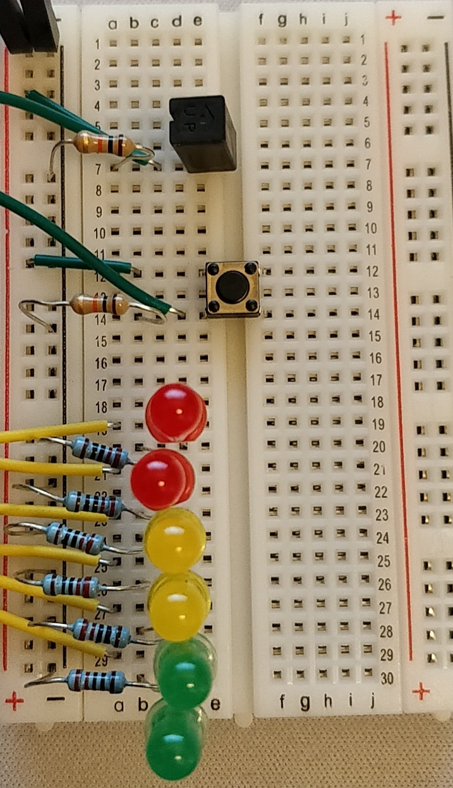
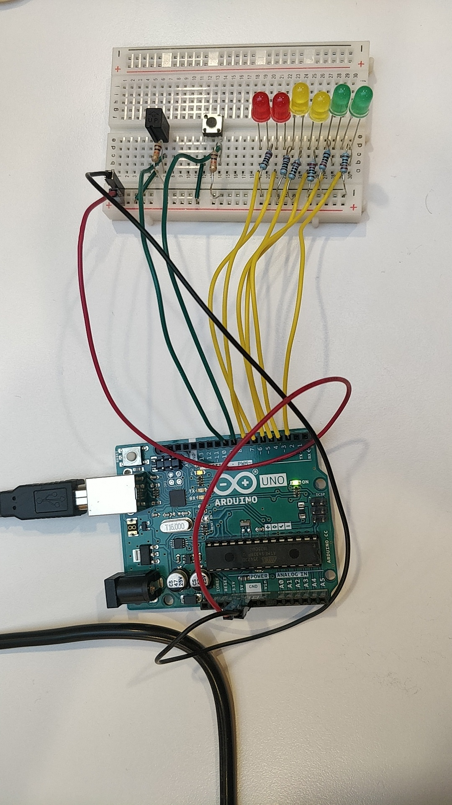

I denne oppgaven valgte jeg å gjøre Digital hourglass (oppgave 8) fra Arduino prosjektboken. Jeg bestemte meg for å legge på noe ekstra på oppgaven. Jeg la blant annet inn en reset knapp som resatt tiden og LED lysene.Jeg la også inn at LED lyset blinker når "tiden" står på det LED-lyset.
Oppkobling

Illustrasjon av hele oppkoblingen.
Bildet over er det en illustrasjon av hele oppkoblingen. Denne har jeg satt opp i Autodesk Tinkercad. Jeg fikk høre om Tinkercad og fikk lyst til å bruke det til å tegne oppkoblingen min i denne oppgaven. Man kan også bruke Tinkercad til å simulere kode på Arduino-enheten og simulere kretsen.
Utstyrsliste
Komponent / del
Antall
Arduino UNO
1
Breadboard
1
Ledning
12
220Ω motstand
6
10KΩ motstand
2
Tilt sensor
1
Knapp
1
Oppkoblingen steg for steg:
Startet med å legge til alle LED lysene. Koblet også 5V og Ground til breadboardet.

Steg 1. i oppkobling
Legger til motstandene til LED-lysene (220Ω motstander). Disse motstandene kobler katoden på LED-lyset til ground.

Steg 2. i oppkobling
Kobler anode siden på LED-lysene til innganger på Arduinoen med kabler. Kobler det nederste LED-lyset til pin 2, det neste LED-lyset til pin 3 og dette gjentar seg for alle LED-lysene helt opp til det siste LED-lyset som kobles til pin 7.

Steg 3. i oppkobling
Kobler opp tilt-sensoren. Kobler den ene inngangen på sensoren til 5V. Kobler den andre inngangen på sensoren med ground med en motstand på 10KΩ. Den samme inngangen kobler jeg til pin 9 på arduinoen.

Steg 4. i oppkobling
Dette er det siste steget i oppkoblingen. Her setter jeg inn en knapp som skal resette timeglasset. Kobler den ene siden av knappen til 5V. Kobler den andre siden til ground med en motstand på 10KΩ. Kobler den samme siden til pin 8 på arduinoen.

Steg 5. i oppkobling
Nå er all oppkoblingen gjort. Bilde av hele oppkoblingen:

Bildet av hele oppkoblingen.
Kode
Jeg fulgte ikke koden i Arduino prosjekt boken. Jeg tenkte det var best å lage min egen kode på grunn av at jeg skulle legge på ekstra funksjonalitet. All koden finnes her.
Gjennomgang av kode:
Første jeg gjorde var å deklarere variabler som inneholdt hvilken pin de forskjellige delene er koblet til. Her brukte jeg også en array til alle LED-lysene hvor rekkefølgen på arrayet er rekkefølgen LED-lysene står i.
const int ledPins[6] = {2,3,4,5,6,7};
const int buttonPin = 8;
const int sensorPin = 9;
Den neste variablen jeg deklarer er int currentLed = 0; Denne variabelen holder på indeksen til det LED-lyset som blinker. Her er det snakk om indeksen i const int ledPins[6] arrayet.
Deklarer bool blink = false;. Denne variabelen er true når det blinkende LED-lyset skal lyse.
Deklarer alle variabelene som brukes i forbindelse med tiden til å beregne når LED-lysene skal på/av. Siden return-verdien til millis() er av type unsigned long int så deklareres alle variablene med den typen.
unsigned long int startTime;
unsigned long int timePerLed = 1000 * 3; // 3 seconds
unsigned long int blinkTimer;
unsigned long int blinkTime = 250; // 0.25 second
unsigned long int waitTime = 0;
unsigned long int waitStart = 0;
unsigned long int waitStop = 0;
void reset() kalles når man klikker på knappen. Denne resetter tiden og slår av alle LED-lysene.
void setup() kalles når programmet / arduinoen starter. I denne funksjonen så setter jeg pinMode på alle pinsene. Her setter jeg OUTPUT på alle LED-lysene og INPUT på knappen og sensoren. Her setter jeg også startTime = millis();. Jeg er usikker på om dette er en nødvendighet, siden det er mulig at millis() funksjonen returnerer 0 fordi det ligger i void startup().
void loop() blir først kalt etter void setup() og blir deretter kalt om og om igjen helt til noen bryter strømmen til Arduinoen. Går igjennom min void loop() funksjon steg for steg:
Først henter jeg data fra sensoren og knappen.
int sensorValue = digitalRead(sensorPin);
int buttonValue = digitalRead(buttonPin);
Kaller void reset() hvis knappen er trykket på.
if(buttonValue) {
reset();
}
Sjekker om noen roterer på sensoren med if(sensorValue){ ... }. Da skjer dette:
Deretter sjekker om personen har pauset timeglasset med å rotere det andre veien og nå har startet timeglasset igjen med å rotere det tilbake. Hvis det er tilfellet så må man vite hvor lenge timeglasset var pauset: waitTime += waitStop - waitStart;
Tilslutt så setter jeg verdien til LED-lysene ut fra currentLed og blink variabelen. Alle LED-lysene som har indeks under currentLed skal lyse. Det LED-lyset som er currentLed skal blinke:
for(int i = 0; i < 6; i++) {
digitalWrite(ledPins[i], i < currentLed ? HIGH : LOW);
digitalWrite(ledPins[currentLed], blink ? HIGH : LOW);
}
Her setter jeg waitStart og waitStop til tiden pausen startet og pausen stoppet. Jeg slår også av LED-lyset som blinker, slik at det tilfeldigvis ikke er på når timeglasset pauses.